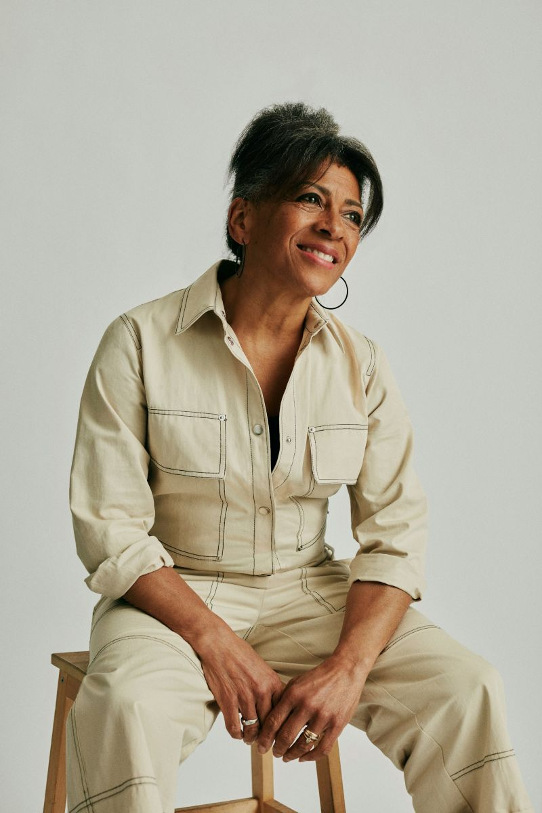

About Us
Our mission here at Cella's Antique Shop is to embrace, restore and keep history alive in various items. This antique shop began its journey into becoming what it is today back in 1990. An 18 year old young woman by the name of Princella decided she wanted to share her passion and love for antiques with others.
Pricella grew up very sickly and spent much time at home but that did not stop her from becoming the successful businesswomen that she is today. Instead of looking at her situation in a negative light, she decided to dive in and explore the history of items that most would say is just old junk. However, Princella saw the beauty and value in that “old junk”.
Come on down to Cella's Antique Shop and share your stories and take a look at the various collections that we have! Princella would love to speak with you about the beauty and history of the item. She would also be more than happy to help you with your decor!
